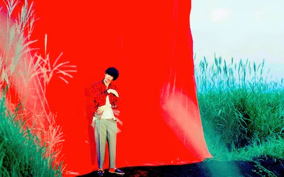
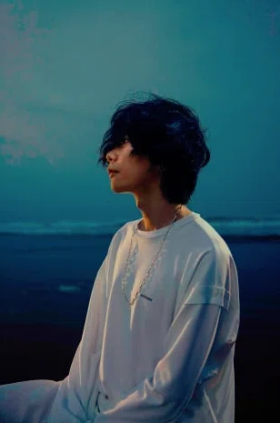

アーティスト写真紹介
1.ピースサイン
2017年リリースのシングル「ピースサイン」リリース時のアーティスト写真
2.BOOTLEG
2017年リリースのアルバム「BOOTLEG」リリース時のアーティスト写真

3.海の幽霊
2019年リリースの楽曲「海の幽霊」リリース時のアーティスト写真

4.STRAY SHEEP
2020年リリースのアルバム「STRAY SHEEP」リリース時のアーティスト写真
5.さよーならまたいつか！
2024年リリースの楽曲「さよーならまたいつか！」リリース時のアーティスト写真
6.Plazma
2025年リリースの楽曲「Plazma」リリース時のアーティスト写真